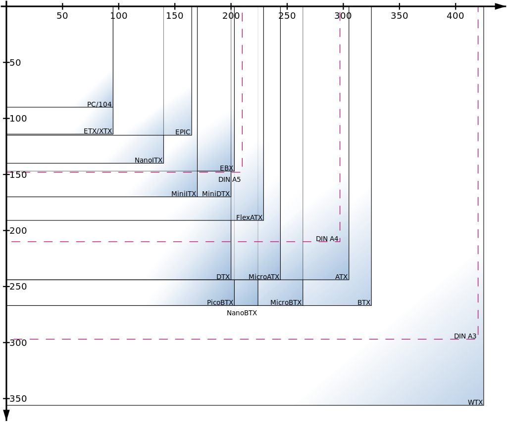
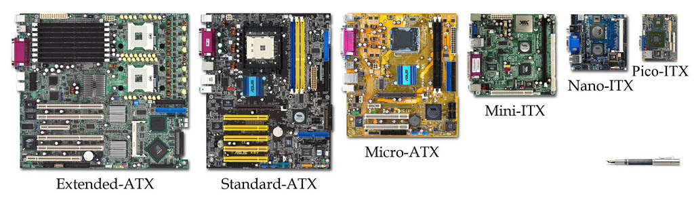

Clasificación según el formato
La clasificación mas usual de las placas base es según su factor de forma, muy relacionado con la caja en la que se va a montar. En la siguiente imagen podemos ver la relación entre los diferentes tamaños de las placas y sus denominaciones.  En la actuaalidad el factor de forma mas común son las ATX e ITX:  En este enlace podemos ver cuatro ejemplos de placas y sus componentes
Clasificación según zocalo
Un factor esencial de un placa base es el zocalo del procesador que incluye pues determina que procesadores podremos encajar ( lo que no implica que necesariamente lo vaya a soportar).En relación con los zocalos podemos encontrar también placas multiprocesador, Este tipo de placa base puede acoger a varios procesadores (generalmente de 2, 4, 8 o más). Estas placas base multiprocesador tienen varios zócalos de microprocesador, lo que les permite conectar varios microprocesadores físicamente distintos. Cuando hay dos procesadores en una placa base, hay dos formas de manejarlos:
- El modo asimétrico, donde a cada procesador se le asigna una tarea diferente. Este método no acelera el tratamiento, pero puede asignar una tarea a una unidad central de procesamiento, mientras que la otra lleva a cabo a una tarea diferente.
- El modo simétrico, llamado multiprocesamiento simétrico, donde cada tarea se distribuye de forma simétrica entre los dos procesadores.